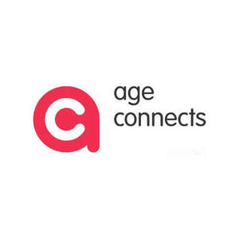
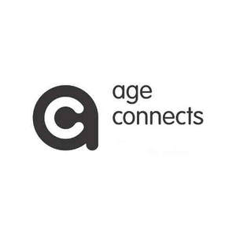

Trade Mark Journal No.2025/014 4 April 2025
UK00004169716 6 March 2025 (35,36,41,43,44,45)
Mark 1

Mark 2

- Class 35
- Negotiation of contracts for electricity rates for others; retail services connected with the sale of combustible fuels; electronic shopping retail services and mail order retail services connected with the sale of personal alarms, books; retail services connected with the sale of clothing, cookware, tableware, cutlery, books, printed matter, textiles, jewellery, CDs, DVDs, tapes, toys, games, furniture, mobility aids, musical instruments; retail services connected with the sale of flowers.
- Class 36
- Charitable fundraising and the managing and monitoring of charitable funds; insurance services; advisory services in respect of financial and money management; tax planning including entitlement to state and pension benefits and tax effective schemes and planning for retirement and debt; provision of housing accommodation in relation to the elderly and advice in relation to the same; personal advice services relating to debt advice and benefit advice.
- Class 41
- Provision of education services in relation to money management, health, welfare, housing, consumer affairs and family matters including the publication of online electronic publications (not downloadable) and offline publications; the provision of seminars, training and conferences; provision of entertainment, sporting and cultural activities and recreational activities for the elderly, lottery services.
- Class 43
- Temporary or holiday accommodation: booking or reservation of temporary accommodation; catering/restaurant services; provision of retirement accommodation for the elderly; services for providing food and drink in day care.
- Class 44
- Medical advice; hygiene service and advice, provision of advice relating to health and welfare; medical and psychological counselling services; Provision of health care services in domestic homes, day care.
- Class 45
- Personal and social services rendered by others to meet the needs of individuals, namely shopping, cooking, light domestic duties including washing and cleaning, and personal care including support with bathing, dressing and with medication; funeral and undertaking services; legal services: advisory service relating to consumer rights; personal advice services relating to legal matters, pastoral counselling, social work services, debt advice, benefit advice.
AGE CONCERN BIRMINGHAM
Representative: Stuart Price